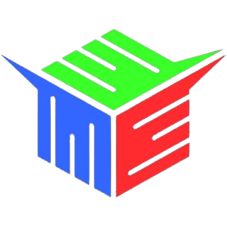

Máquinas do laboratório

ROUTER CNC LASER
- Dimensões de trabalho: 60cm x 40cm
- Laser de CO2 (gás carbônico). Potência: 80W
- 1 unidade
- Marca/Modelo: Visutec 6040

IMPRESSORA 3D
- Dimensões de trabalho: 10 x 10 x 10 cm
- Material de trabalho: PLA, ABS
- 4 unidades
- Marca/Modelo: Creality Ender 3

MINI FRESADORA CARTESIANA
- Material de trabalho: madeira, plásticos e sintéticos leves.
- Dimensões de trabalho 30 x 18 cm
- 1 unidade
- Marca/Modelo: Projeto aberto/genérico CNC 3018
O que é o FabLab?
O FabLab CAMTUC é uma iniciativa dos cursos de Engenharia do Campus Tucuruí, Universidade Federal do Pará, com o objetivo de promover a fabricação digital no município de Tucuruí, aperfeiçoar o ensino, desenvolver a região e um dia se juntar à rede mundial.
O seu objetivo é fornecer às pessoas meios de liberar seu potencial criativo através da fabricação de soluções para os problemas do dia a dia. Artesanato, robótica, costura, artes plásticas, maquetes, automação, marcenaria, inteligência artificial, são alguns dos desafios que o laboratório pode encarar.As máquinas e ferramentas ali presentes permitem fabricar "quase qualquer coisa". No Lab tem impressoras 3D, cortadora de vinil, router laser, fresadoras, além de várias outras ferramentas elétricas e manuais para cortar, moldar, imprimir, soldar e transformar os mais variados tipos de materiais.
Logo do FabLab de Tucuruí